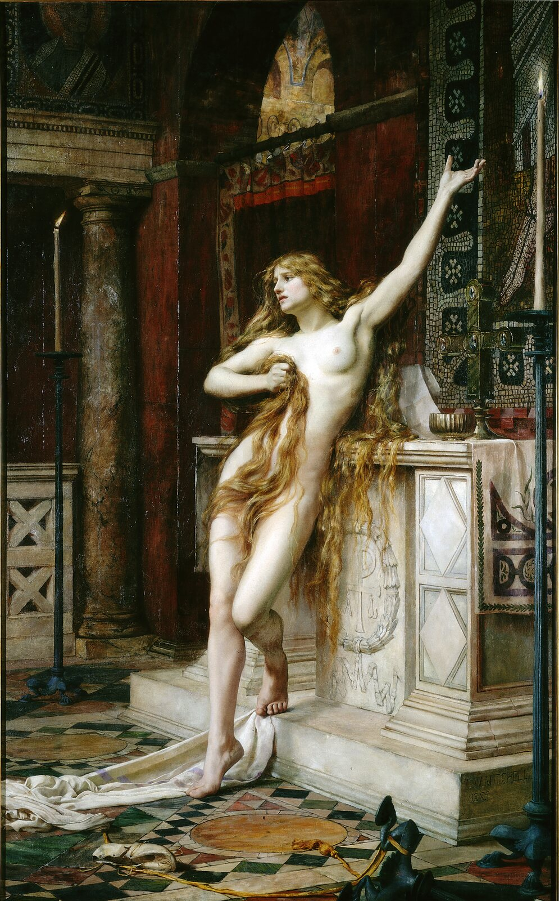
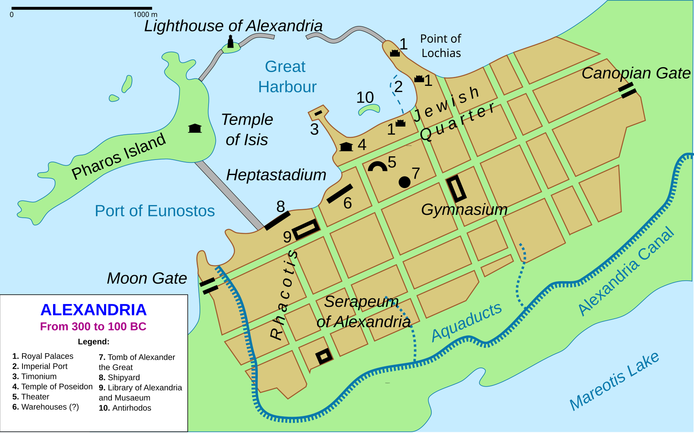
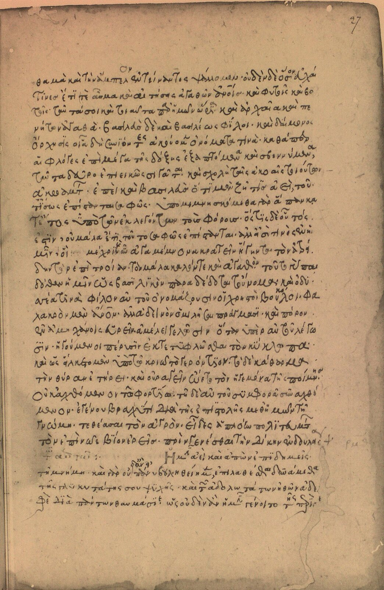

13
Diophantus《Arithmetica》评注
古代目录传统把对这部十三卷数学著作的评注归于 Hypatia。她很可能以解释、整理与教学为目标，使复杂题解更便于后人使用。
边界：原作散佚，无法逐段区分她与后世抄写者的贡献。时间的女儿001
她的名字总与惨烈的死亡捆绑在一起。可是，如果只凝视生命的终点， 我们会错失她最重要的身份——一位把哲学、数学与人格教育连在一起的教师。

序章 · 从死亡退回生命
希帕蒂娅（Hypatia）被塑造成科学的殉道者、异教的圣徒、启蒙运动的武器、 女性主义的先驱，甚至一位差点发现日心说的现代科学家。每一层形象都回应了 后世真实的需要，却也可能把她本人遮得更深。
去定义她，远不如去接近她重要。
本网站依照视频文稿的核心判断展开：比起哲学家或科学家的现代头衔， 希帕蒂娅首先是一位杰出的教师。她的课堂跨越宗教身份；她的学生网络延伸至 帝国官僚与 Christian 主教；她又以哲学家的道德责任进入城市公共生活。 正是这种教育与公共声望，使她在 412—415 年的权力斗争中成为一个危险的象征。
阅读地图
Alexandria · 从知识之都到冲突之城
亚历山大城并非自然生长的聚落，而是 Alexander the Great 的政治想象。 它坐落在地中海、尼罗河与跨区域贸易的交界，后来由 Ptolemaic Dynasty 建设为 希腊化世界最具象征性的知识中心。

早期 Ptolemaic rulers 以王室财富建立 Mouseion 与大图书馆，吸引诗人、 数学家、天文学家和文献学者。Euclid、Eratosthenes、Heron 等名字让 Alexandria 成为“知识之都”的代名词。但这一繁荣从来依赖政治资助、人才流动与抄写网络， 并不会因为一座建筑落成便自动永存。
其衰落也不是“一场大火烧掉全部知识”的单一灾难。Ptolemy VIII 对学者的驱逐、 Roman annexation 后的制度变化、帝国战争、其他学术中心的竞争、365 年地震与海啸， 都是更长的过程。Serapeum 在 391 年被毁是重要断裂，却不等于“主图书馆当日焚尽”。
Alexander the Great 规划 Alexandria。
Ptolemaic rulers 以王室制度支持知识生产。
Ptolemy VIII 的政治清洗打击学术共同体。
地震与海啸重创 Alexandria 海岸。
宗教与城市权力冲突中的重要转折，并非大图书馆“一夜终结”。
一位哲学家的死成为城市政治结构变化的标志。
父亲与女儿
Theon of Alexandria 是数学家、天文学家与经典文本编辑者。他对 Euclid《Elements》 等作品的整理，代表晚期古代“保存、校订、教学”的学术劳动。Hypatia 接受了这一训练， 却很快以教学声望、哲学领导力与城市影响力超越父亲。
我们不知道她母亲的名字，也无法复原她完整的童年。可以确定的是：她出生约在 350—370 年之间，父亲将数学与天文学传统传给了她。把这说成 Theon 一手规划的 “完美女儿培养计划”属于后世浪漫化；史料只允许我们看到教育关系的轮廓。
Mathematics · Astronomy · Philosophy
数学揭示秩序，天文学展示宇宙和谐，哲学则追问灵魂如何理解并返回真理。 这三种工作不是现代意义上的三个职业，而是同一条求知道路的不同阶段。
13
古代目录传统把对这部十三卷数学著作的评注归于 Hypatia。她很可能以解释、整理与教学为目标，使复杂题解更便于后人使用。
边界：原作散佚，无法逐段区分她与后世抄写者的贡献。◯
后世材料提到她处理过圆锥曲线。更稳妥的说法是：她参与解释或校订这一传统，而不是声称她独立完成了现存版本。
边界：书名与工作性质在不同重建中并不完全一致。III
Theon 在第三卷评注中提到“由我的女儿、哲学家 Hypatia 校订的版本”；这说明她参与文本与天文计算工作，但具体范围仍有解释空间。
边界：语法可被不同方式理解，不能把整部《Almagest》都归功于她。✦
Synesius 的著作与信件显示，Hypatia 的圈子掌握平面星盘和比重计等技术知识；他曾请老师协助制作测量液体密度的仪器。
边界：她没有发明星盘，也没有证据证明电影中那些现代式天文实验。☉
电影《Agora》把她塑造成几乎推导出椭圆轨道的先驱。这是有感染力的现代改编，却没有古代史料支持。
结论：适合讨论电影如何重塑历史，不宜当作传记事实。Ⅰ
Hypatia 是古代资料最丰富的女性数学家，却不一定是第一位。她之前的 Pandrosion 已在数学史料中留下痕迹。
结论：称“第一位有较丰富记录的女性数学家”更稳妥。仪器不是神奇发明的奖章
把 Hypatia 说成星盘或比重计的“发明者”，会制造一个更耀眼却更虚假的英雄。 史料真正呈现的是另一种能力：她理解数学原理，能判断仪器设计，也能成为学生在 技术问题上的求助对象。这正是古代高阶教育的一部分。
新柏拉图主义（Neoplatonism）
Hypatia 的哲学很可能接近 Plotinus 式传统：万物由无法完全言说的最高本源流溢而出， 人则通过理性、德性与自我审视重新趋近秩序。点击下方层级，查看这条道路。
它不是一个拥有普通人格的“最高神”，而是所有存在、秩序与善的终极根源。语言只能指向它，不能穷尽它。
需要谨慎：Hypatia 自己的哲学著作没有保存下来。我们主要从学生 Synesius、 Socrates Scholasticus 与后来的 Damascius 倒推她的思想，因此“Plotinian、重理性、 与 theurgy 保持距离”是有依据的历史重建，而非她亲笔留下的完整体系。
The teacher before the martyr
她继承古代哲学教育中对话、示范与共同生活的传统。学生学习的不只是命题和星表， 还包括如何克制欲望、判断公共事务、把哲学变成一种生活方式。
她本人属于 Hellenic religious tradition，现存材料中可识别的核心学生却多为 Christians，其中 Synesius 后来成为 bishop。
她穿着象征哲学家身份的 tribon，在城市公共空间与官员面前从容发言；她的哲学并不只留在私人书房。
她的学生把彼此视作哲学兄弟，把老师称作“母亲、姐妹、教师、恩人”。课堂延伸为跨城市的信任网络。
学生从她那里学到的不只是抽象真理，也包括用影响力帮助同胞、让政治生活接受更高道德标准。

学生的声音 · Synesius
“母亲、姐妹、老师、恩人，以及一切在名义和行动上值得尊敬的人。”
性别为什么重要
Socrates 特别强调她在 magistrates 面前出现、进入男性集会而不怯场。 这既证明她声望非凡，也反映记述者认为一个女性能如此公开行动需要解释。
Damascius 讲述她以 menstrual cloth 劝退追求者的故事，常被当作“冷酷女哲学家”趣闻。 但这段材料写成于她死后一百多年，带有男性作者对女性身体、贞洁与哲学权威的塑造。 它可以显示后世怎样理解她，却不能像现场记录一样使用。
A classroom inside the city
古代哲学家的声望会转化为政治资本。学生成为官员，官员前来咨询，课堂形成跨城市网络。 Hypatia 因此既是教育者，也是城市精英信任的公共顾问。
强硬摧毁 Serapeum，却长期容许 Hypatia 的温和学派活动，并支持 Synesius 成为 bishop。
直接关系缺乏文献；“默契”是从政治环境作出的推断。她的权力来自声望、学生网络和被信任的判断，而非军队、教会职务或 imperial appointment。
Alexandria 的 imperial prefect，Hypatia 的朋友与政治咨询对象；后来与 Cyril 争夺城市权威。
在争议继承中上台，迅速扩大 episcopal power，并与 Orestes 的行政权发生正面冲突。
没有直接证据证明他下令谋杀；政治责任与直接命令必须区分。Theophilus 去世后，Cyril 在一场伴随街头冲突的继任竞争中成为 patriarch。 城市中的 episcopal authority、imperial administration、不同宗教群体与街头动员重新排列。 过去允许 Hypatia 作为跨派系仲裁者活动的空间开始收缩。
Synesius 曾请她为陷入诉讼或政治困境的朋友提供帮助，并写道她“总是拥有权力， 可以利用这权力带来善果”。这里的“权力”不是统治权，而是声誉带来的进入渠道、 推荐能力与道德说服力。她把哲学家的公共义务带入现实政治，亦因此变得可被攻击。
危险的转化
当政治把中间地带视作背叛时，独立声望便不再是保护，而会成为需要摧毁的替代权力。
Alexandria · 412—415
谋杀发生在宗教身份、城市街头政治与帝国行政权冲突的交叉处。 Christian mob 杀害了她，这是事实；但把所有 Christians、所有 theology 与 scientific inquiry 简化为两个永恒阵营，会遮蔽真正的政治机制。
在 Alexandria Jewish community 与 Christians 的暴力冲突后，Cyril 关闭 synagogues 并驱逐部分 Jews；Orestes 认为这侵犯 imperial authority。
一群 monks 围攻 Orestes，Ammonius 用石块击伤他。prefect 以酷刑处死 Ammonius；Cyril 一度试图把后者称作 martyr，城市中的温和 Christians 并不接受。
Orestes 本人受 imperial office 保护，Hypatia 却更容易被攻击。街头流言把她描绘成以 magic 迷惑 prefect、阻止双方和解的人。
Peter the lector 率领一群人拦截她的车，把她拖入 Caesareum 并杀害，随后焚毁遗体。Socrates 将事件称为“political jealousy”的结果。
同一场死亡，三种叙述位置
点击史料，比较成书时间、立场与它真正能够证明的内容。
称赞 Hypatia 的学识、尊严与公共声望，明确说她因与 Orestes 会面而被谣传为阻碍和解，最终成为 political jealousy 的牺牲品。
价值：距离事件较近，且作者作为 Christian 仍谴责暴徒；是重建谋杀过程的核心材料。
限制：他不在 Alexandria，且以 church history 的道德主题组织事件。
把 Cyril 的 envy 置于故事中心，强化 Hypatia 作为 philosophy martyr 的形象，也保存了她公开教学和拒绝追求者等逸闻。
价值：来自后来的 Alexandrian philosophical tradition，保留其他材料未见的细节。
限制：成书较晚，敌视 Christian authority，也带有明显的性别偏见与学派竞争。
把 Hypatia 描写成使用 magic 迷惑 Orestes 的 pagan woman，并赞许 Cyril 清除了 idolatry 的残余。
价值：证明“女巫—政治操纵者”叙事如何在后世 Christian memory 中形成。
限制：距事件约 250 年，文本经多次语言转译流传，不能直接当作 415 年街头流言的逐字记录。
责任判断
谋杀之后
imperial government 随后限制 Parabalani 的人数及其与 bishop 的关系，说明 Constantinople 把 Alexandria 的暴力团体视为治理问题。可是凶手没有受到与罪行相称的公开惩罚， Cyril 的政治地位继续上升，Orestes 此后从记录中消失。
新柏拉图主义没有随 Hypatia 死亡而终结；Alexandria 与 Athens 仍有哲学教学， 女性哲学家也并未绝迹。她的死更准确地标志着一种跨宗教、与 civic elite 合作的 公共哲学模式在 Alexandria 遭受致命打击，而不是“415 年以后世界立刻进入黑暗中世纪”。
“允许屠杀、斗殴及类似行为，绝对违背 Christian 的精神。”
Six lives after death
真实著作散佚、死亡极具戏剧性，使 Hypatia 成为一种“开放符号”。 每个时代都从她身上取走自己最需要的部分，也把别的部分留在阴影里。
6 世纪 · pagan philosophical memory
Damascius 等 pagan philosophers 把她的死变成对 Christian power 的控诉，强调 Cyril 对她智慧与声望的嫉妒。
她确实是哲学家，也确实死于由 Christian crowd 实施的政治暴力。
她与 Christian students 的合作、她的温和道路，以及 pagan authors 自身的性别偏见。
如何使用把它作为古代记忆政治，而非透明传记。
理解后世为什么需要这些 Hypatia，并不等于嘲笑后世“全都虚假”。
Enlightenment 对宗教权威的批判、feminism 对女性知识史的追索、现代观众对 scientific freedom 的珍视， 都是真实的历史诉求。问题在于：当象征彻底代替人物，我们会再次让一个女性只为他人的事业服务。
07 · 最后的话
她没有推翻宇宙，也没有独自守着一座在 415 年燃烧的图书馆。 她做了另一件更真实、更缓慢、也更难的事：在一座愈发分裂的城市里， 让不同信仰的学生相信，理性、德性与友谊可以共享同一间课堂。
1884 年发现的 main-belt asteroid 以她命名。
A Journal of Feminist Philosophy 创刊，把她的名字交给女性主义哲学。
她与父亲 Theon 的名字都留在 lunar map 上。
只要这份对理性和宽容的向往仍在传递，Hypatia 的光就从未真正熄灭。
观看完整视频
网站沿用并扩展了视频文稿的章节结构。视频适合跟随叙事与画面完整进入故事； 网站则适合慢读、比较史料、查看证据边界。
史料与延伸阅读
Hypatia 没有留下可确认的自传或完整著作。重建她的一生，必须把学生书信、接近同时代的 church history、 后来的 philosophical biography 与现代研究分层使用。
| 材料 | 距离 | 最适合回答 | 主要限制 |
|---|---|---|---|
| Synesius, Letters学生写给老师及友人的信 | 生前 / 一手关系材料 | 教学关系、学生网络、仪器知识、公共影响力 | 只保存学生一方的声音；书信集经过编辑 |
| Socrates, Church History 7.15约 439 年 | 距死约 24 年 | 公共声望、Orestes 冲突、谋杀过程与当时评价 | 并非现场目击；服务于 church history 叙事 |
| Damascius, Life of Isidore6 世纪初，残篇 | 距死近百年 | 后来的 pagan memory、教学逸闻、Cyril 责任叙事 | 敌视 Christianity；性别与学派偏见明显 |
| John of Nikiu, Chronicle 847 世纪后期 | 距死约 250 年 | 反 Hypatia 传统与“magic”指控的后世形态 | 晚出；传本复杂；公开赞许谋杀 |